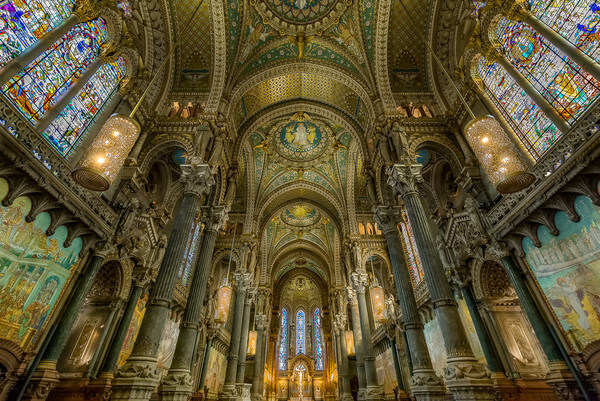
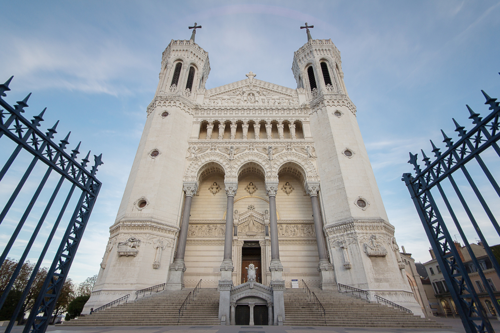
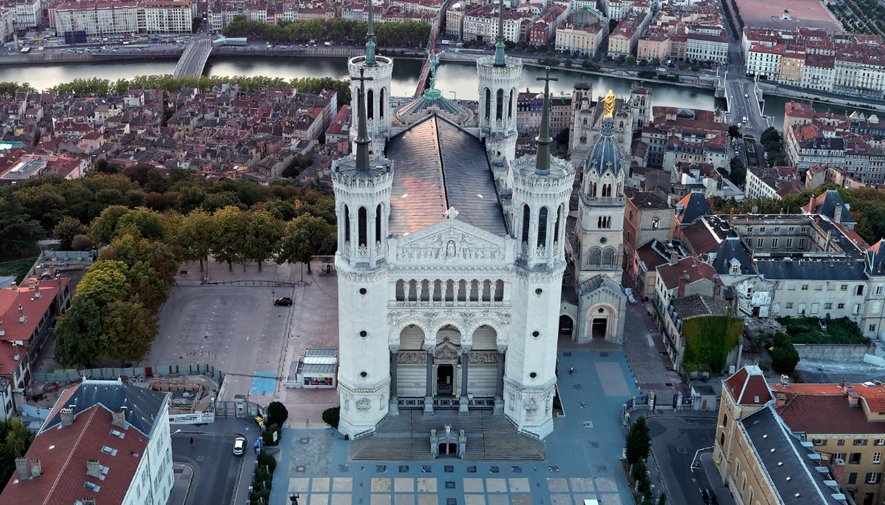

The Basilica of Notre-Dame de Fourvière is the spiritual symbol of Lyon, standing prominently atop Fourvière Hill and watching over the city with quiet grandeur. Constructed between 1872 and 1884, the basilica was built as a vow of gratitude after Lyon was spared the siege and bombardment that devastated much of France during the Franco-Prussian War of 1870. The Lyonnais consider the basilica a protective presence over their city — a sentiment reflected in its nickname, "the upside-down elephant" due to its four towers said to resemble elephants' legs when seen from below.
The architecture of Fourvière is a breathtaking fusion of Romano-Byzantine styles, its interior smothered in richly colored mosaics, carved stone, stained glass windows, and gilded ornament. The basilica's four chapels each tell a story from the history of Lyon and the Virgin Mary through their extraordinary decorative programs. Outside, a gilded statue of the Virgin Mary at the top of the bell tower is one of Lyon's most iconic silhouettes, visible from many points across the city.
Reaching Fourvière is itself part of the experience. Visitors can take the historic funicular railway (ficelle) from the old town, or make the steep climb on foot through winding stepped paths that reward with increasingly spectacular views. From the esplanade in front of the basilica, the panoramic view over Lyon — the Saône and Rhône rivers, the rooftops of Vieux Lyon, the modern city, and on clear days the snow-capped peaks of the Alps — is one of the most memorable in all of France.


